Lecture related to my Systems Engineering course.
Preliminary Design
Preliminary Design starts with the initial FBL and continues to translate the requirements from Conceptual Design into design requirements for the system elements that will combine to form the system. The result of the Preliminary Design is the establishment of an Allocated Baseline (ABL), in which requirements are ‘allocated’ to specific physical system elements that combine to form the system.
The responsibility usually rests with the developer (the contractor), who develops the system to meet the requirements of the FBL (prepared by the customer). Now, the role of the customer becomes more of a monitoring one, reviewing and supporting contractor progress.
The activities include
- subsystem requirements analysis
- requirements allocation
- interface identification/design
- subsystem-level synthesis
- Preliminary Design Review (PDR)
Subsystem requirements analysis
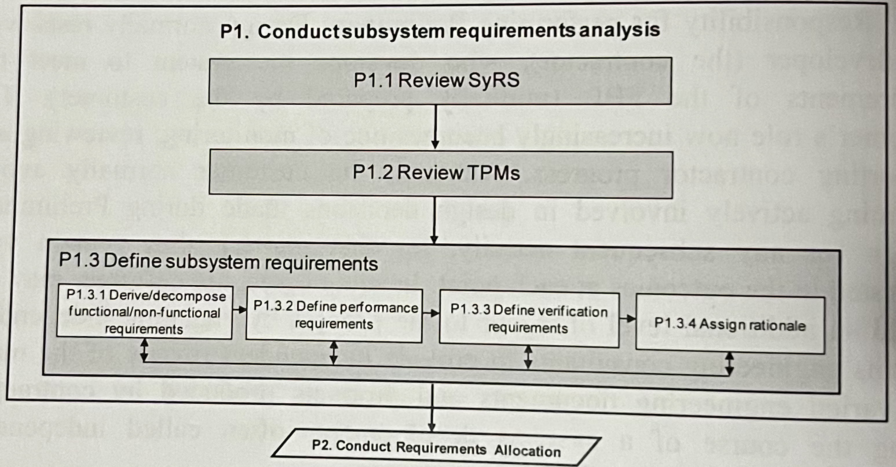
FFBDs assist in defining the sequences and inter-relationships between the blocks (series VS parallel) as well as major interfaces and dependencies between functions.
This stage starts translating “what” into “how”, so from logical design to physical design (problem domain to solution domain).
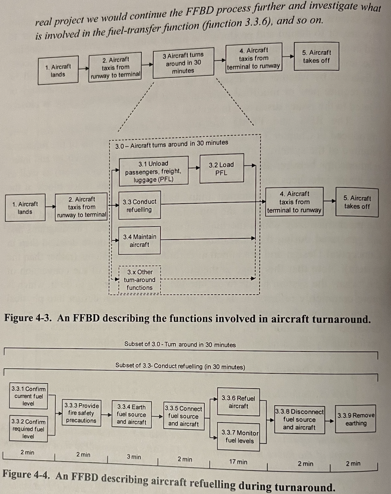
In Figure 3.3 above we can see that one of the stakeholder needs in the StRS was that the aircraft is capable of turning around in 30 mins to begin its next flight. Figure 4.4 shows how another FFBD is used to further develop that idea and coming to the solution that a 17 min refuel is necessary. Functions from 3.3 could be defined as the Fuel Subsystem which shows how important traceability is when defining requirements.
Requirements Allocation
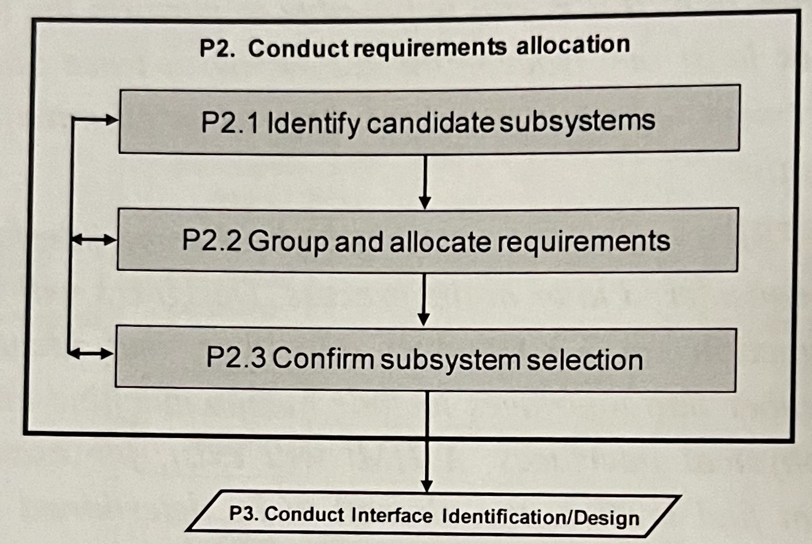
The major focus of requirements allocation is the allocation of requirements to subsystems and CIs (configuration items).
Identify Candidate Subsystems
Some subsystems examples could be
- The fuel system includes all the tanks, refuelling/de-fuelling receptables, fuel pumps, and fuel lines necessary to support the engines,
- The Undercarriage system includes the structures, tyres and brakes necessary to support the aircraft while on the ground,
- etc.
Depending on how the designers intend to realize the subsystems, they may be broken down further into configuration items (CIs) - hardware, software. The selection of CIs is called configuration identification.
Group and Allocate Requirements
A useful way of showing logical to physical relationships is through allocation matrix or traceability matrix. The RBS logical requirements (representing the logical design of the aircraft system) are shown on the left-hand side of the matrix and the physical design is shown across the top of the matrix as a series of CIs.
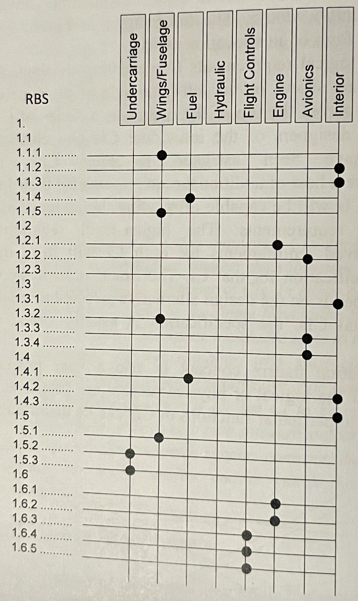
RBS VERSUS WBS
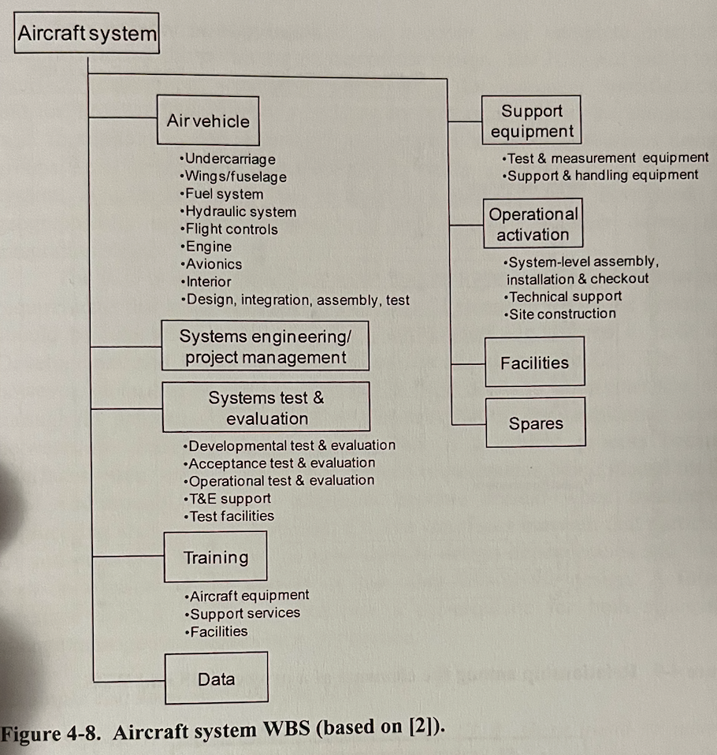
The work breakdown structure (WBS) documents the products and the associated work packages necessary to produce the system. The WBS adds to the subsystems/CIs the work required to design, develop, integrate and test.
The WBS is organized physically and the RBS logically.
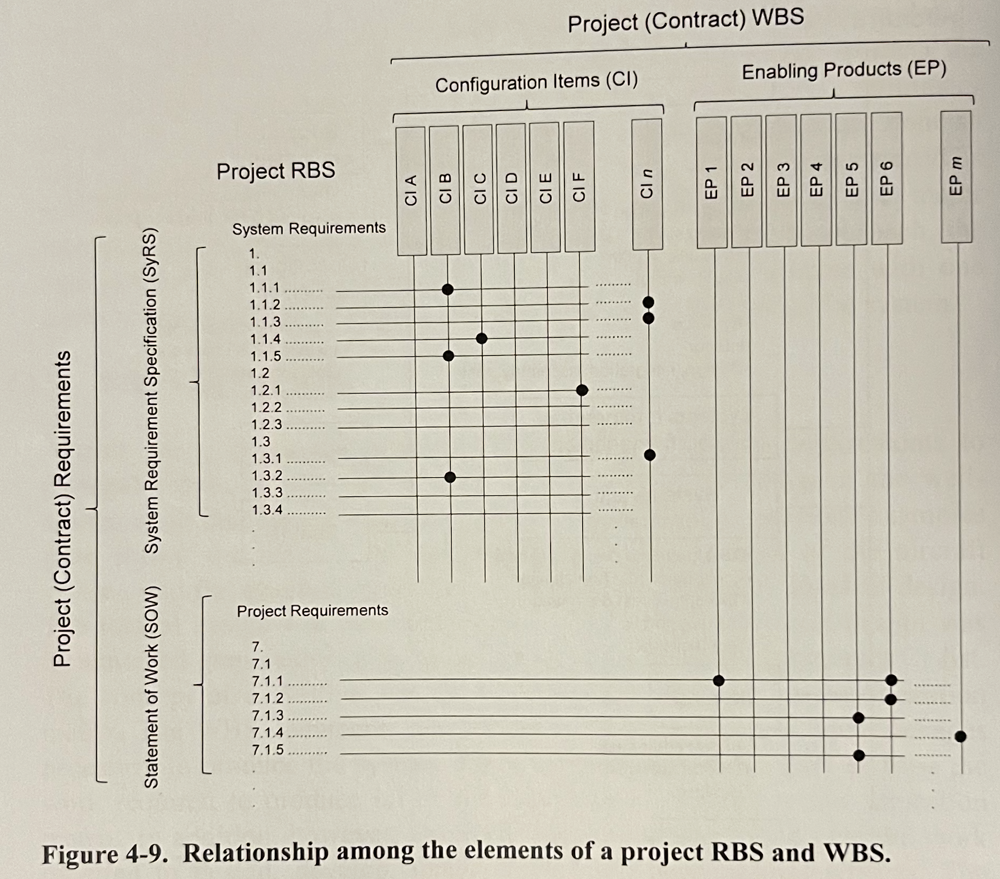
The RBS includes system requirements in the SyRS and project requirements in the SOW (Statement of Work) and the project WBS includes the CIs that make up the system and the enabling products produced to assist in the development of the system and its through-life management and support.
Interface Identification and Design
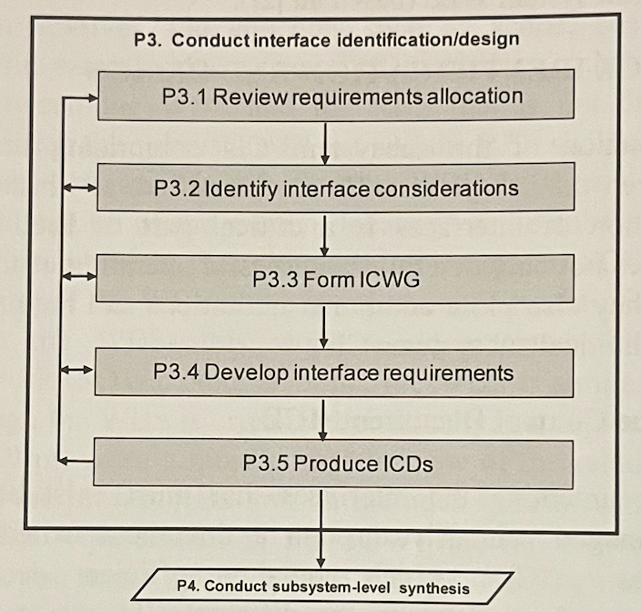
Interfaces not only determine successful operation of the system once integrated, but they also place additional limitations and requirements on the design of the individual subsystems/CIs.
Interface Control Document (ICD)
The ICD is responsible for specifying the logical and physical interface requirements that exist between the different CI elements within the system.
- It is a document which contains sufficient details to define completely the interfaces between the different CIs — or at least points to where such information is recorded.
- A primary source of information for identifying interfaces is the context diagram.
- Successful integration relies on accurate and complete interface definition during the preceding phases of the design.
Types of Interface
- Physical Interfaces (e.g. pipes through which a fluid or gas flows) — in defining the physical interface, factors such as mechanical connection type and specification, physical size, etc. are defined.
- Electronic Interfaces (analogue or digital) — these signals may flow over a physical interface such as a cable or fibre or make use of RF transmission (e.g. microwave, satellite).
- Electrical Interfaces (e.g. power cable, data cable) — it should include voltage level, voltage type and any associated factors such as fault tolerance requirements.
- Hydraulic/pneumatic Interfaces — are the mechanical equivalent of electronic or electrical interfaces. Additional info such as flow rate, pressure, temperature will be required.
- Software Interfaces — require information such as expected inputs, generated outputs, format of the messages and any protocols used.
- Environmental Interfaces — they form the interface between the system and its external environments (e.g. structural, thermal, magnetic, radiation).
Interface Control Working Group (ICWG)
To ensure that the teams developing the CIs have their needs met, and to facilitate communication between the teams, an interface control working group (ICWG) may be formed to bring together those involved in the interface definition and design.
ICWGs must meet regularly to generate the initial ICD and should then meet periodically to address any ongoing issues.
Interface Definition using the Diagram
The diagram represents a matrix with system functions (or physical elements) running down the diagonal and the remainder of the cells in the matrix represents the interfaces.
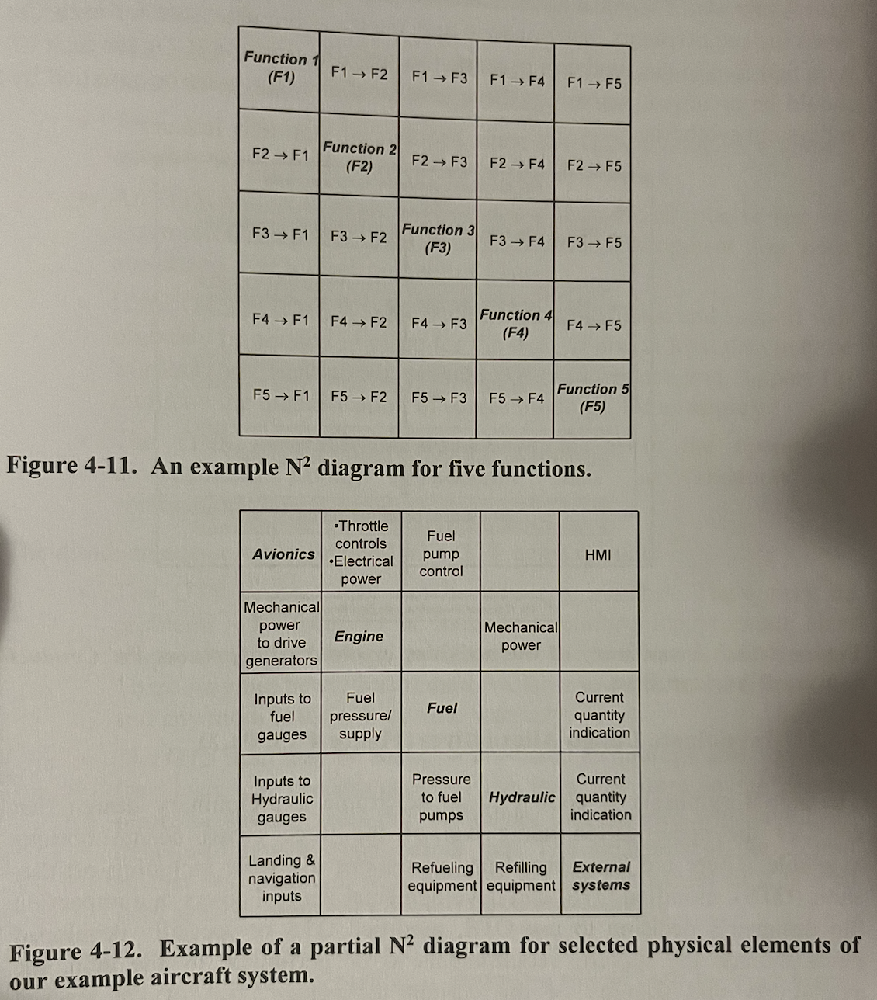
Subsystem-Level Synthesis and Evaluation
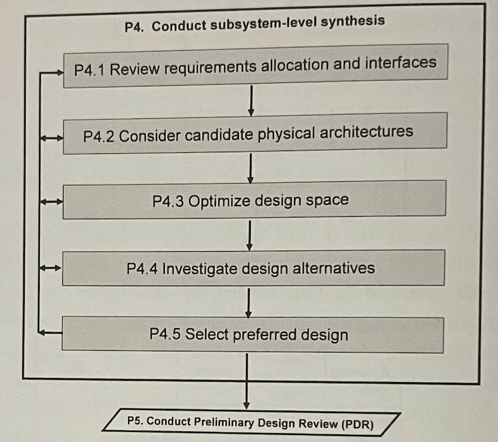
Investigate Design Alternatives
There are 3 broad design options available including off-the-shelf (OTS), modified OTS, and development items. It depends on:
- availability and stability of the current technology,
- size of the market,
- supportability and cost,
- any contractual directives.
Off-the-shelf (OTS)
Advantages:
- likely to be readily available with limited or no delay,
- reduced technical risk,
- cheaper,
- validated.
Disadvantages:
- compatibility (size, weight, functionalities),
- outdated (technology far from the current norm),
- evidence of robustness,
- warranty,
- limited documentation,
Modified OTS
Should take into account that:
- Support and warranty could be voided if the OTS item is modified,
- Modifications could be much harder and costlier than anticipated in the beginning.
Developmental Items
If suitable OTS equipment is not available, the designer may opt to design and develop the item from the ground up to meet the specific requirements and characteristics detailed in the relevant Devlopment Specifications.
Advantages:
- match the desired criteria,
- all aspects will be understood.
Disadvantages:
- much effort,
- risk of not achieving the final goal,
- maintenance and support issues.
Use of Architectures
The problem domain is gradually coalesced into the BRS StRS SyRS which describes the logical architecture of the system. This logical architecture in the FBL is then allocated to a physical architecture in the form of the configuration items as they are described in the ABL.
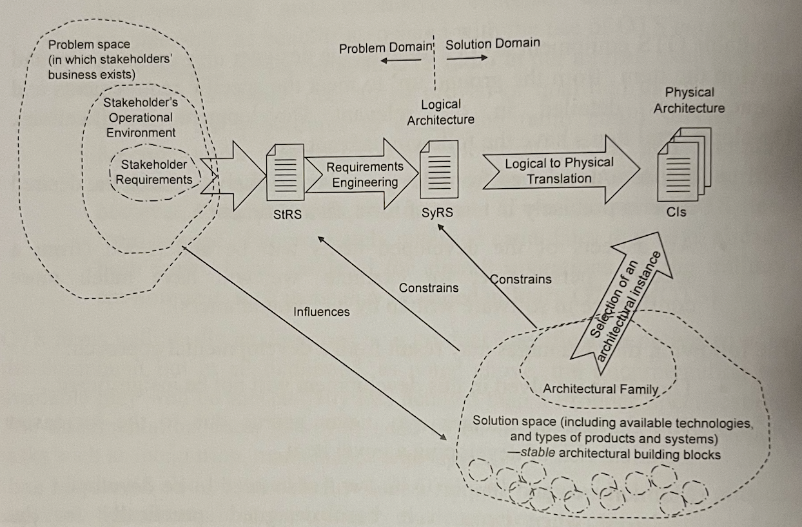
Types of architectures
- Functional
- Functional Breakdown Structure (FBS)
- Requirements Breakdown Structure (RBS)
- FFBD
- Logical
- Logical subsystems
- Groups functions
- Modules for similar or strongly related functions
- Physical
- Subsystems that are physically separate
- Configuration items (CIs) that are sourced
- Hardware assemblies
- Internal / External
- System / Human
- MBSE
- Interface is exposed by ports
- Ports connected to other ports
- A port can be of type
- Flow (for physical or data flow)
- Service (software or human services using messages)
How did we uncover the external interfaces?
- Black-Box diagram
- Context diagram
In how many places can we find internal interfaces?
- In the internal architectures (e.g. diagram)
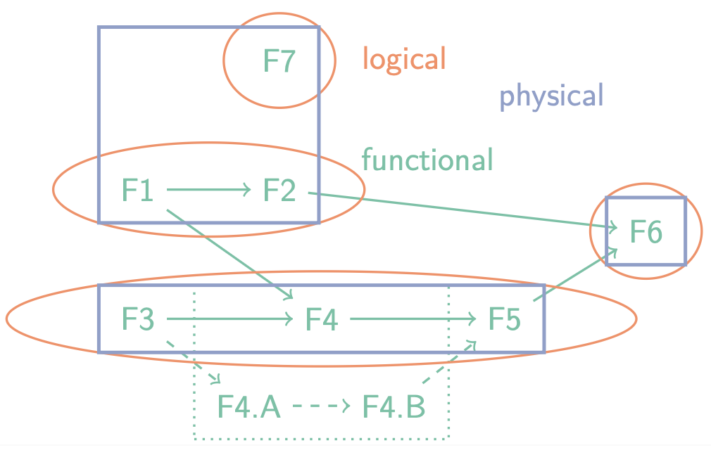
Which architectures are agnostic to implementation?
- Functional + logical
What are the three types of system architectures, and what is the relation between them?
- Functional, grouped into Logical blocks, divided over Physical subsystems.
Preliminary Design Review
- Goal: Ensure technical adequacy of the proposed solution to meet FBL.
PDR consists of making sure that:
- Design is appropriate
- TPMs have enough margin
- Subsystem design complete:
- Development Specifications (subsystems, CIs)
- Interface Control Documents (IDD) complete
- Traceability is in order (FBL ABL)
- ABL formally established